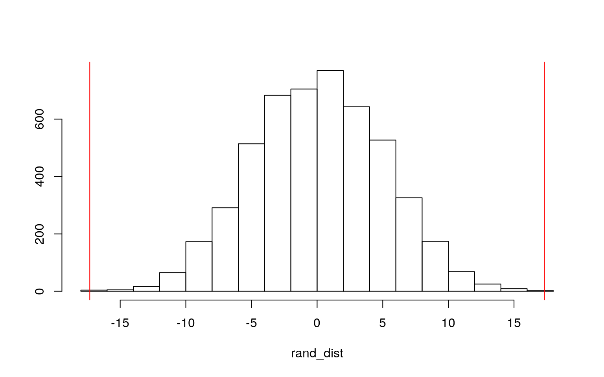
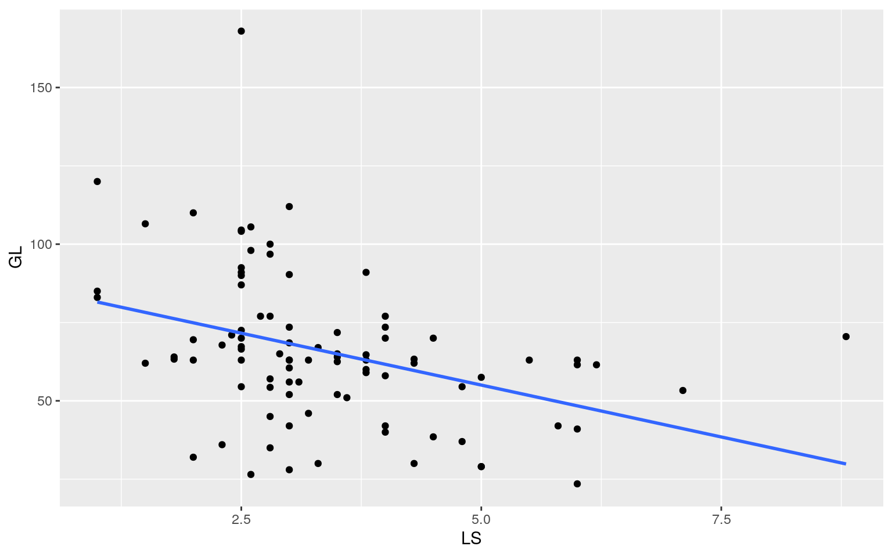
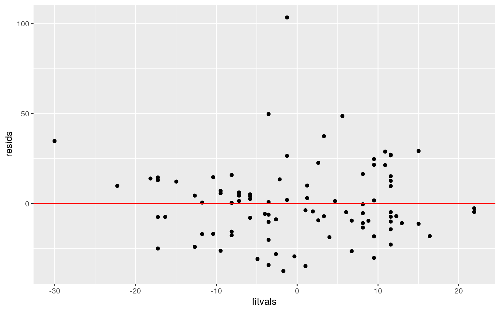
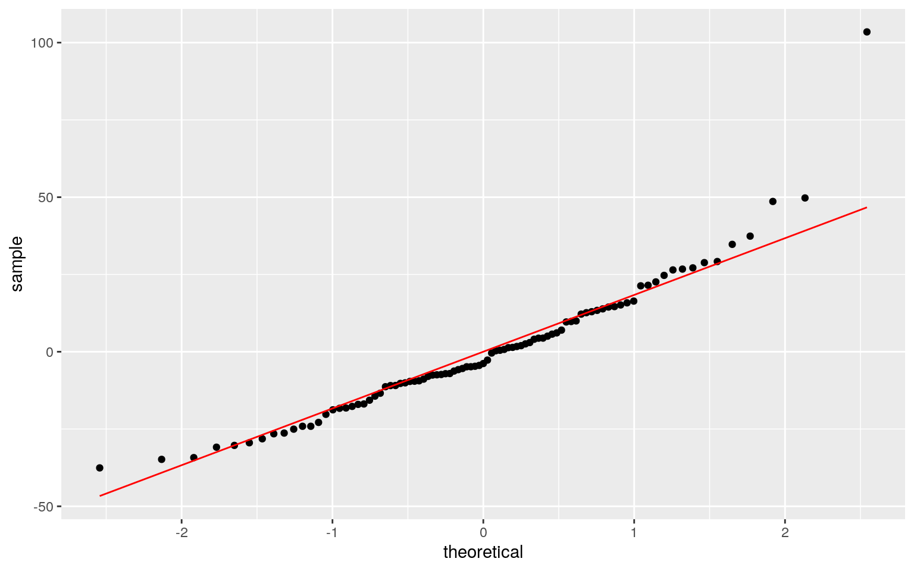
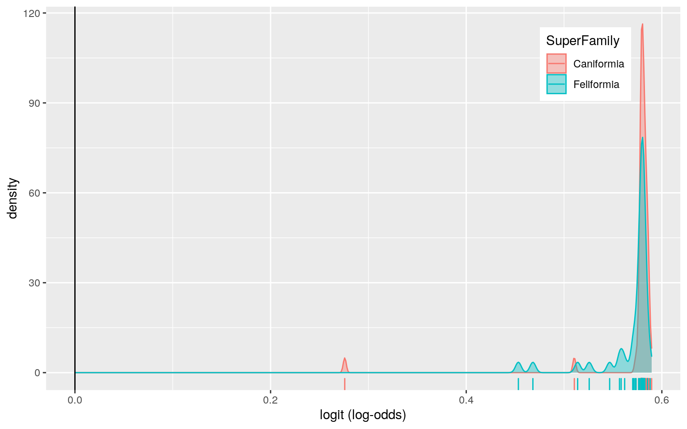
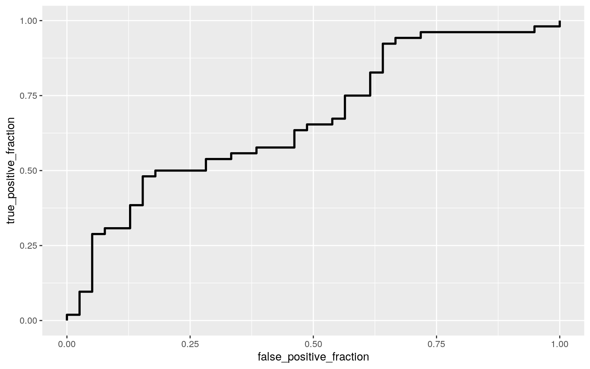

The carnivora dataset contains various information about “dog-like” and “cat-like” (based on superfamily) carnivores such as taxonomic, morphological, and life history data. Taxonomic variables include their order, superfamily, family, genus, and species. Only superfamily and family will be used due to the other three containing too many distinct values or too little. Morphological variables include average female body weight (kg), average body weight of adult males and adult females (kg), average female brain weight (g), and average brain weight of adult males and adult females (g). Life history variables include average litter size, gestation length (days), birth weight (g), weaning age (days), age of independance (days), longevity (months), age of sexual maturity (days), and inter-birth intervals (months). Only litter size and gestation length (days) will be used due to the other variables missing values. Initially there are 112 observations and 17 variables. After omission, 91 observations and 8 variables remain.
library(ape)
library(dplyr)
library(glmnet)
library(lmtest)
library(plotROC)
library(sandwich)
library(rstatix)
library(tidyverse)
class_diag <- function(prob,truth){
#CONFUSION MATRIX: CALCULATE ACCURACY, TPR, TNR, PPV
if(is.character(truth)==TRUE) truth<-as.factor(truth)
if(is.numeric(truth)==FALSE & is.logical(truth)==FALSE) truth<-as.numeric(truth)-1
tab<-table(factor(prob>.5,levels=c("FALSE","TRUE")),factor(truth, levels=c(0,1)))
acc=sum(diag(tab))/sum(tab)
sens=tab[2,2]/colSums(tab)[2]
spec=tab[1,1]/colSums(tab)[1]
ppv=tab[2,2]/rowSums(tab)[2]
#CALCULATE EXACT AUC
ord<-order(prob, decreasing=TRUE)
prob <- prob[ord]; truth <- truth[ord]
TPR=cumsum(truth)/max(1,sum(truth))
FPR=cumsum(!truth)/max(1,sum(!truth))
dup <-c(prob[-1]>=prob[-length(prob)], FALSE)
TPR <-c(0,TPR[!dup],1); FPR<-c(0,FPR[!dup],1)
n <- length(TPR)
auc <- sum( ((TPR[-1]+TPR[-n])/2) * (FPR[-1]-FPR[-n]) )
data.frame(acc,sens,spec,ppv,auc)
}data(carnivora)
carnivora %>% summarize_all(n_distinct)## Order SuperFamily Family Genus Species FW SW FB SB LS GL
BW WA AI LY AM IB
## 1 1 2 8 72 112 99 101 82 89 31 67 59 45 26 28 41 16carni <- carnivora %>% dplyr::select(SuperFamily, Family, FW:GL) %>% na.omit()# MANOVA
man <- manova(cbind(SW, SB, GL)~Family, data = carni)
summary(man)## Df Pillai approx F num Df den Df Pr(>F)
## Family 6 1.065 7.7054 18 252 5.984e-16 ***
## Residuals 84
## ---
## Signif. codes: 0 '***' 0.001 '**' 0.01 '*' 0.05 '.' 0.1
' ' 1# ANOVA
summary.aov(man)## Response SW :
## Df Sum Sq Mean Sq F value Pr(>F)
## Family 6 88394 14732.4 19.532 3.884e-14 ***
## Residuals 84 63360 754.3
## ---
## Signif. codes: 0 '***' 0.001 '**' 0.01 '*' 0.05 '.' 0.1
' ' 1
##
## Response SB :
## Df Sum Sq Mean Sq F value Pr(>F)
## Family 6 192372 32062 18.65 1.145e-13 ***
## Residuals 84 144405 1719
## ---
## Signif. codes: 0 '***' 0.001 '**' 0.01 '*' 0.05 '.' 0.1
' ' 1
##
## Response GL :
## Df Sum Sq Mean Sq F value Pr(>F)
## Family 6 12596 2099.38 4.472 0.0005631 ***
## Residuals 84 39434 469.45
## ---
## Signif. codes: 0 '***' 0.001 '**' 0.01 '*' 0.05 '.' 0.1
' ' 1# t tests
carni %>% group_by(Family) %>%
summarize(mean(SW), mean(SB), mean(GL))## # A tibble: 7 x 4
## Family `mean(SW)` `mean(SB)` `mean(GL)`
## <fct> <dbl> <dbl> <dbl>
## 1 Canidae 9.89 61.0 60.0
## 2 Felidae 38.4 91.4 80.9
## 3 Hyaenidae 29.0 92.2 99
## 4 Mustelidae 4.66 30.2 53.9
## 5 Procyonidae 3.61 29.8 74.2
## 6 Ursidae 204. 299. 77
## 7 Viverridae 3.23 17.9 66.6pairwise.t.test(carni$SW,
carni$Family, p.adj = 'none')##
## Pairwise comparisons using t tests with pooled SD
##
## data: carni$SW and carni$Family
##
## Canidae Felidae Hyaenidae Mustelidae Procyonidae Ursidae
## Felidae 0.00288 - - - - -
## Hyaenidae 0.26848 0.58623 - - - -
## Mustelidae 0.53519 9.7e-05 0.14697 - - -
## Procyonidae 0.68198 0.02442 0.22871 0.94292 - -
## Ursidae 6.4e-15 3.6e-12 5.9e-10 7.2e-16 7.7e-13 -
## Viverridae 0.47550 0.00024 0.13548 0.86229 0.97999
1.3e-15
##
## P value adjustment method: nonepairwise.t.test(carni$SB,
carni$Family, p.adj = 'none')##
## Pairwise comparisons using t tests with pooled SD
##
## data: carni$SB and carni$Family
##
## Canidae Felidae Hyaenidae Mustelidae Procyonidae Ursidae
## Felidae 0.0328 - - - - -
## Hyaenidae 0.2326 0.9757 - - - -
## Mustelidae 0.0171 4.2e-06 0.0157 - - -
## Procyonidae 0.1789 0.0086 0.0519 0.9845 - -
## Ursidae 2.8e-11 2.2e-09 4.9e-07 1.2e-13 6.3e-11 -
## Viverridae 0.0029 8.5e-07 0.0051 0.3258 0.6060 4.0e-14
##
## P value adjustment method: nonepairwise.t.test(carni$GL,
carni$Family, p.adj = 'none')##
## Pairwise comparisons using t tests with pooled SD
##
## data: carni$GL and carni$Family
##
## Canidae Felidae Hyaenidae Mustelidae Procyonidae Ursidae
## Felidae 0.00545 - - - - -
## Hyaenidae 0.00511 0.18372 - - - -
## Mustelidae 0.36452 8.1e-05 0.00094 - - -
## Procyonidae 0.24183 0.57658 0.13732 0.08372 - -
## Ursidae 0.29642 0.81029 0.26918 0.14932 0.88069 -
## Viverridae 0.36985 0.05098 0.01866 0.05521 0.52819
0.52090
##
## P value adjustment method: none# type 1 error probability
1 - (.95^25) # = 0.7226104## [1] 0.72261041 MANOVA, 3 ANOVA, and 21 t tests were performed for a total of 25 tests. The probability of at least one type 1 error is 0.7226104.
# bonferroni correction
0.05/25 # = 0.002## [1] 0.002MANOVA and ANOVA test results were significiant before and after a bonferroni correction. From the t tests, we can see that Ursidae differs the most from the other species in average body weight and average brain weight of adult males and females before and after the bonferroni correction. When it came to gestation length however, not much difference was observed, and very little witha bonferroni correction, but the most significant difference with and without the correction was between Mustelidae and Felidae.
# assumptions
group <- carni$Family
DVs <- carni %>% select(SW,SB,GL)
lapply(split(DVs,group), cov)## $Ailuridae
## SW SB GL
## SW NA NA NA
## SB NA NA NA
## GL NA NA NA
##
## $Canidae
## SW SB GL
## SW 77.0911 309.5548 26.98540
## SB 309.5548 1387.2065 118.30779
## GL 26.9854 118.3078 24.08779
##
## $Felidae
## SW SB GL
## SW 2472.8889 3387.5773 655.9715
## SB 3387.5773 4813.4987 933.7731
## GL 655.9715 933.7731 271.3210
##
## $Hyaenidae
## SW SB GL
## SW 480.3345 1171.567 129.37
## SB 1171.5670 2950.330 220.10
## GL 129.3700 220.100 133.00
##
## $Mustelidae
## SW SB GL
## SW 41.95178 196.8289 112.2608
## SB 196.82889 1036.5594 629.3597
## GL 112.26078 629.3597 1046.5419
##
## $Procyonidae
## SW SB GL
## SW 6.357292 26.77917 -5.732917
## SB 26.779167 117.08333 18.141667
## GL -5.732917 18.14167 542.289167
##
## $Ursidae
## SW SB GL
## SW 17672.0 7454.200 -2632.0
## SB 7454.2 3144.245 -1110.2
## GL -2632.0 -1110.200 392.0
##
## $Viverridae
## SW SB GL
## SW 15.37332 39.48822 22.29448
## SB 39.48822 115.29118 62.25451
## GL 22.29448 62.25451 167.50810box_m(DVs, group)## # A tibble: 1 x 4
## statistic p.value parameter method
## <dbl> <dbl> <dbl> <chr>
## 1 NaN NaN 36 Box's M-test for Homogeneity of Covariance
MatricesThe multivariate normality assumption was likely met as there are more than 20 observations per variable. Observations should be independent of one another. There also shouldn’t be any extreme outliers. However, it seems very likely that most assumptions were violated.
carni %>% group_by(SuperFamily) %>%
summarize(means=mean(GL)) %>%
summarize('mean_diff'=diff(means))## # A tibble: 1 x 1
## mean_diff
## <dbl>
## 1 17.3# 17.31859
set.seed(56)
rand_dist <- vector()
for(i in 1:5000){
carni_df <- data.frame(GL = sample(carni$GL), SuperFamily = carni$SuperFamily)
rand_dist[i] <- mean(carni_df[carni_df$SuperFamily == 'Caniformia',]$GL) -
mean(carni_df[carni_df$SuperFamily == 'Feliformia',]$GL)
}
mean(rand_dist < -17.31859 | rand_dist > 17.31859)## [1] 2e-04# 2e-04
{hist(rand_dist,main="",ylab=""); abline(v = c(17.31859,-17.31859),col="red")}
H0 : There is no mean gestation length difference between the two super families Caniformia and Feliformia.HA : There is a mean gestation length difference between the two super families Caniformia and Feliformia.
The p-value is much smaller than 0.05 so we should reject the null hypothesis. There seems to be evidence of a difference in mean gestation length between Caniformia and Feliformia.
# mean centering
carni$LS_c <- carni$LS - mean(carni$LS)
mean(carni$LS) # = 3.375824## [1] 3.375824carni$GL_c <- carni$GL - mean(carni$GL)
mean(carni$GL) # = 65.78571## [1] 65.78571carni <- carni %>% mutate_at('SuperFamily', as.factor)
# regression model
lmfit <- lm(GL_c~SuperFamily*LS_c, data = carni)
coeftest(lmfit)##
## t test of coefficients:
##
## Estimate Std. Error t value Pr(>|t|)
## (Intercept) -5.2567 3.1901 -1.6478 0.10299
## SuperFamilyFeliformia 10.7955 5.8339 1.8505 0.06764 .
## LS_c -4.5669 1.9911 -2.2937 0.02422 *
## SuperFamilyFeliformia:LS_c -2.3253 5.7164 -0.4068
0.68517
## ---
## Signif. codes: 0 '***' 0.001 '**' 0.01 '*' 0.05 '.' 0.1
' ' 1Predicted gestation length for a Caniformia carnivore with an average litter size of 3.375824 is 5.2567. Controlling for litter size, gestation length is 10.7955 days longer for Feliformia carnivores compared to Caniformia carnivores. Controlling for super family, Caniformia carnivores have a decrease in gestation length of 4.5669 days for every 1-unit increase in litter size. The slope for litter size on gestation length in days is 2.3253 smaller for Feliformia carnivores compared to Caniformia carnivores.
# regression plot
ggplot(carni, aes(LS,GL)) + geom_point() + geom_smooth(method='lm', se=F)
# R^2
SSE <- sum(lmfit$residuals^2)
SST <- sum((carni$GL - mean(carni$GL))^2)
1 - (SSE/SST) # = 0.192643## [1] 0.192643The model explains 0.192643 of the variation in the outcome.
# assumptions
resids<-lmfit$residuals
fitvals<-lmfit$fitted.values
ggplot() + geom_point(aes(fitvals,resids)) +
geom_hline(yintercept=0, color='red')
ggplot() + geom_qq(aes(sample=resids)) +
geom_qq_line(aes(sample=resids), color='red')
Normality assumption is met. Linearity and homoskedascity are mostly met. There are some observations that look like outliers and are causing skews.# regression w/ robust SEs
coeftest(lmfit, vcov = vcovHC(lmfit))##
## t test of coefficients:
##
## Estimate Std. Error t value Pr(>|t|)
## (Intercept) -5.2567 4.2827 -1.2274 0.2230
## SuperFamilyFeliformia 10.7955 5.4291 1.9885 0.0499 *
## LS_c -4.5669 2.9402 -1.5533 0.1240
## SuperFamilyFeliformia:LS_c -2.3253 4.3510 -0.5344 0.5944
## ---
## Signif. codes: 0 '***' 0.001 '**' 0.01 '*' 0.05 '.' 0.1
' ' 1After computing regression results with robust standard errors, Super Family is significant and litter size is no longer significant.
set.seed(56)
samp_distn<-replicate(5000, {
boot_dat<-boot_dat<-carni[sample(nrow(carni),replace=TRUE),]
fit<-lm(GL~SuperFamily*LS_c, data=boot_dat)
coef(fit)
})
## Estimated SEs
samp_distn%>%t%>%as.data.frame%>%summarize_all(sd)## (Intercept) SuperFamilyFeliformia LS_c
SuperFamilyFeliformia:LS_c
## 1 4.079742 5.231845 2.670088 4.393438The bootstrap SE is greater than the original SE but less than the robust SE for the intercept, and is likely not significant. The Super Family bootstrap SE is less than the original and robust SE, and is likely significant with bootstrap SEs. The bootstrap SE is greater than the original SE but less than the robust SE for litter size, and is probably not significant. The interaction bootstrap SE is less than the original and robust SE, and is likely not significant.
carni <- carni %>% mutate(bSF = ifelse(SuperFamily == 'Caniformia', 1, 0))
glmfit1 <- glm(bSF~FW+FB, data = carni, family = 'binomial')
coeftest(glmfit1)##
## z test of coefficients:
##
## Estimate Std. Error z value Pr(>|z|)
## (Intercept) 0.3139297 0.3380827 0.9286 0.3531
## FW -0.0056720 0.0130089 -0.4360 0.6628
## FB 0.0012210 0.0083299 0.1466 0.8835exp(0.3139297)## [1] 1.368794exp(-0.0056720)## [1] 0.9943441exp(0.0012210)## [1] 1.001222Holding FB constant, every 1 increase in FW multiplies odds by a factor of 0.9943441. Holding FW constant, every 1 increase in FB multiplies odds by a factor of 1.001222.
prob1 <- predict(glmfit1, type = 'response')
table(predict = as.numeric(prob1 > 0.5), truth = carni$bSF) %>% addmargins## truth
## predict 0 1 Sum
## 0 2 1 3
## 1 37 51 88
## Sum 39 52 91class_diag(prob1, carni$bSF)## acc sens spec ppv auc
## 1 0.5824176 0.9807692 0.05128205 0.5795455 0.6711045The model correctly classified 0.5824176 of all observations. The model correctly predicted 0.9807692 of Caniformias as Caniformia. The model correctly predicted 0.05128205 of Feliformias as Feliformias. 0.5795455 of those classified as Caniformia are actually Caniformia. The AUC of 0.6711045 indicates that female body weight and brain weight is a poor classifier of super family.
carni %>% ggplot() +
geom_density(aes(prob1,color=SuperFamily,fill=SuperFamily), alpha=.4) +
theme(legend.position=c(.85,.85))+geom_vline(xintercept=0)+xlab("logit (log-odds)")+
geom_rug(aes(prob1,color=SuperFamily))+
geom_text(x=-5,y=.07,label="TN = 431")+
geom_text(x=-1.75,y=.008,label="FN = 19")+
geom_text(x=1,y=.006,label="FP = 13")+
geom_text(x=5,y=.04,label="TP = 220")
ROCplot <- ggplot(carni) +
geom_roc(aes(d=bSF, m=prob1), n.cuts=0)
ROCplot
calc_auc(ROCplot)## PANEL group AUC
## 1 1 -1 0.6711045The AUC is still 0.6711045 so female body weight and brain weight are still poor classifiers of super family.
glmfit2 <- glm(bSF~FW+SW+FB+SB+LS+GL, data = carni, family = 'binomial')
coeftest(glmfit2)##
## z test of coefficients:
##
## Estimate Std. Error z value Pr(>|z|)
## (Intercept) -1.237007 1.453574 -0.8510 0.394764
## FW 0.540913 0.197494 2.7389 0.006165 **
## SW -0.566825 0.199894 -2.8356 0.004574 **
## FB -0.394591 0.166197 -2.3742 0.017585 *
## SB 0.426004 0.166831 2.5535 0.010665 *
## LS 0.916847 0.310262 2.9551 0.003126 **
## GL -0.040647 0.015185 -2.6768 0.007432 **
## ---
## Signif. codes: 0 '***' 0.001 '**' 0.01 '*' 0.05 '.' 0.1
' ' 1prob2 <- predict(glmfit2, type = 'response')
table(predict = as.numeric(prob2 > 0.5), truth = carni$bSF) %>% addmargins## truth
## predict 0 1 Sum
## 0 29 8 37
## 1 10 44 54
## Sum 39 52 91class_diag(prob2, carni$bSF)## acc sens spec ppv auc
## 1 0.8021978 0.8461538 0.7435897 0.8148148 0.8619329The model correctly classified 0.8021978 of all observations. The model correctly predicted 0.8461538 of Caniformias as Caniformia. The model correctly predicted 0.7435897 of Feliformias as Feliformias. 0.8148148 of those classified as Caniformia are actually Caniformia. The AUC of 0.8619329 indicates that the model is a good classifier of super family.
# 10-fold CV
set.seed(1)
k=10
data <- carni %>% sample_frac
folds <- ntile(1:nrow(data),n=10)
diags<-NULL
for(i in 1:k){
train <- data[folds!=i,]
test <- data[folds==i,]
truth <- test$bSF
fit <- glm(bSF~FW+SW+FB+SB+LS+GL, data=train, family="binomial")
prob <- predict(fit, newdata=test, type="response")
diags <-rbind(diags,class_diag(prob,truth))
}
summarize_all(diags,mean)## acc sens spec ppv auc
## 1 0.7488889 0.81 0.64 0.7857143 0.8327778The model correctly classified 0.7488889 of all observations. The model correctly predicted 0.81 of Caniformias as Caniformia. The model correctly predicted 0.64 of Feliformias as Feliformias. 0.7857143 of those classified as Caniformia are actually Caniformia. The AUC of 0.8327778 indicates that the model is a good classifier of super family, but is not as good as the in-sample model.
# LASSO
y<-as.matrix(carni$bSF)
x<-model.matrix(bSF~FW+SW+FB+SB+LS+GL,data=carni)[,-1]
cv <- cv.glmnet(x,y,family="binomial")
lasso <- glmnet(x,y,family="binomial",lambda=cv$lambda.1se)
coef(lasso)## 7 x 1 sparse Matrix of class "dgCMatrix"
## s0
## (Intercept) -0.120105096
## FW .
## SW .
## FB .
## SB .
## LS 0.238939052
## GL -0.005861839Only litter size and gestation length (days) were retained by LASSO.
# 10-fold CV with lasso variables
set.seed(1)
k=10
data <- carni %>% sample_frac
folds <- ntile(1:nrow(data),n=10)
diags<-NULL
for(i in 1:k){
train <- data[folds!=i,]
test <- data[folds==i,]
truth <- test$bSF
fit <- glm(bSF~LS+GL, data=train, family="binomial")
prob <- predict(fit, newdata=test, type="response")
diags <-rbind(diags,class_diag(prob,truth))
}
summarize_all(diags,mean)## acc sens spec ppv auc
## 1 0.69 0.79 0.5333333 0.6922619 0.7661111The model correctly classified 0.69 of all observations. The model correctly predicted 0.79 of Caniformias as Caniformia. The model correctly predicted 0.5333333 of Feliformias as Feliformias. 0.6922619 of those classified as Caniformia are actually Caniformia. The AUC of 0.7661111 indicates that the model is a fair classifier of super family, but the quality has dropped noticebly.